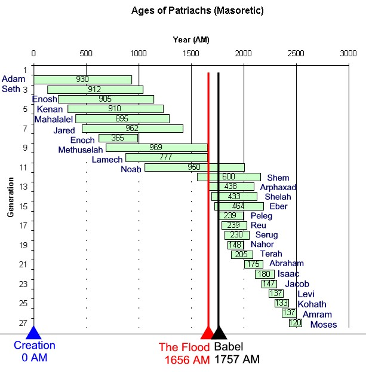
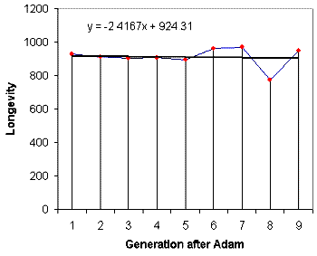
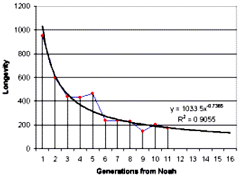
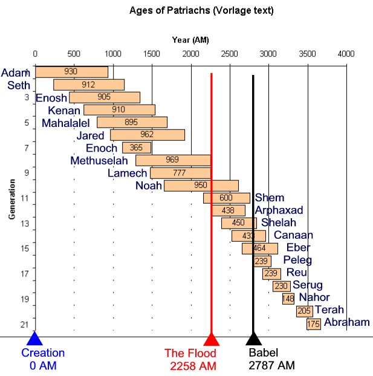

Noah lived a longer life than Adam, and is the third oldest person ever recorded. He spent his first 600 years in the pre-flood world, and then 350 years in the post-flood world (our world).Why did the age of Noah's descendents drop so sharply? This study explores explores the Biblical picture and argues the case for a genetic factor - loss of longevity trait.
Genesis records the ages of the first fathers in meticulous detail. However, the ancestry is entirely in the line of Seth, so we can only speculate about the ages of people descended from Cain (plus all the other sons and daughter of Adam and Eve - which should have been many). Dates in red are approximate. These figures are based on the Masoretic text which is the source used by most modern Bibles.
| Longevity from Adam to Moses | |||||
| No. | Name | Born at... | Fathering Age |
LifeSpan | Died at... |
| 1 | Adam | 0 | 130 | 930 | 930 |
| 2 | Seth | 130 | 105 | 912 | 1042 |
| 3 | Enosh | 235 | 90 | 905 | 1140 |
| 4 | Kenan | 325 | 70 | 910 | 1235 |
| 5 | Mahalalel | 395 | 65 | 895 | 1290 |
| 6 | Jared | 460 | 162 | 962 | 1422 |
| 7 | Enoch | 622 | 65 | 365 | 1290* |
| 8 | Methuselah | 687 | 187 | 969 | 1656 |
| 9 | Lamech | 874 | 182 | 777 | 1651 |
| 10 | Noah | 1056 | 502 | 950 | 2006 |
| 11 | Shem "Semites" | 1558 | 100 | 600 | 2158 |
| 12 | Arphaxad | 1658 | 35 | 438 | 2096 |
| 13 | Shelah | 1693 | 30 | 433 | 2126 |
| 14 | Eber "Hebrews" | 1723 | 34 | 464 | 2187 |
| 15 | Peleg | 1757 | 30 | 230 | 2049 |
| 16 | Reu | 1787 | 32 | 239 | 2026 |
| 17 | Serug | 1819 | 30 | 230 | 2049 |
| 18 | Nahor | 1849 | 29 | 148 | 1997 |
| 19 | Terah | 1878 | 130 | 205 | 2083 |
| 20 | Abram (Abraham) | 2008 | 100 | 175 | 2183 |
| 21 | Isaac* | 2108 | 60 | 180 | 2288 |
| 22 | Jacob (Israel)** | 2168 | 70 | 147 | 2315 |
| 23 | Levi | 2238 | 57 | 137 | 2375 |
| 24 | Kohath | 2295 | 70 | 133 | 2428 |
| 25 | Amram | 2365 | 68 | 137 | 2502 |
| 26 | Moses | 2433 | - | 120 | 2553 |

* Gen 11:26, Terah was 70 when he fathered Abram, Nahor & Haran, but Abram was not have been the oldest. According to Creation 25(2) March-May 2003, "Meeting the Ancestors" Table on p14, Abraham was born in 2008.
See also http://www.amen.org.uk/eh/biblical/patrageb.htm#fig1 for the following explanations.
* Gen 11:32 says Terah aged 205 at death (died 2083 A.M.) Acts 7:4 says when Terah died Abram left Haran. Stephen makes explicit what is implicit in Gen 11:27-12:5, that Abram had two calls. At first call Abram left Ur, but halted at Haran. Abram was 75 when he left Haran (Gen 12:4). Thus Abram was 75 when Terah dies at 205, therefore Terah was 130 when Abram was born, hence Abraham's birthdate is deduced at 2008.
Birth of Joseph Joseph stood before Pharaoh age 30 (Gen 41:46). At end of 7 years plenty Joseph = 37 (Gen 41:29-30). At end of 2 years famine, when Jacob came to Egypt Joseph was 39. (Gen 45:6). At end of 2 years famine when Jacob came to Egypt, Jacob was 130 (Gen 47:9) (i.e. in the year 2298 A.M.). Hence Jacob was 91 when Joseph born. Joseph is a younger 'brother' of Levi.
Birth of Moses Moses and Aaron were sons of Amram (Ex 6:20). Moses birth has to be
deduced: Call of Abram to Exodus (Ex 12:40-41) = 430 years (NB 430 years not the
length of time in Egypt, which was 215 years - clearly so in view of the
genealogy of Moses - for further details see Anstey, (1913) p113-125). Call of
Abram to Joseph (2083-2369) = 286 years hence Death of Joseph to Exodus = 144
years
Less Age of Moses at Exodus = 80 years (Ex 7:7), leaves 64 years. Hence Moses
born 2369+64 = 2433 A.M.
There are several non-chronological portions of Genesis. The most famous is the Genesis 2 recap of chapter 1, focusing on Adam and Eve. Even the rather chronological Chapter 7 chops and changes with summarizing statements sprinkled throughout the text.
The apparent contradiction of separate languages in Chapter 10 'prior' to the tower of Babel in Chapter 11 is another example of overlapping chronology. The genealogies of Chapter 10 extend beyond the tower of Babel. Some apparent contradictions turn out to be key verses - in this case they can be used to date the tower of Babel incident.
In Japheth's line: Japheth > Javan > (Elishah, Tarshish, Kittim etc) > "the maritime peoples spread out into their territories...each with its own language". This places the Babel dispersion in the third generation after Japheth (assuming no generations have been skipped, which is possible considering the line of Japheth is receiving secondary attention here.)
In Ham's line the Babel event is not so obvious. We can trace a few generations; Ham > Cush > Raamah > ? > Nimrod, and we also know that other people groups were descendents of Ham's other sons Mizraim (Ludites, Anamites, Philistines etc) and Canaan (Hittites, Jebusites, Amorites etc). So the exact generation is not apparent here, except that the city establishing traits of Nimrod dictate a post-Babel era.
In Shem's line (the Semitic peoples), we have Shem > Aram > Arphaxad > Eber > Peleg ("for in his days was the earth divided" Gen 10:25). Since the whole chapter is devoted to the formation of nations after the flood, this is a clear depiction of the scattering at Babel, placing the event in the fourth generation after Shem. Since Peleg was named "division", he must have been born just after it happened. This restricts the Babel date to just before 1757, almost exactly 100 years after the flood.
Was this enough time to build up the Babel workforce? These people (Noah's descendents) were extremely healthy and long-lived, and had just been told by God to go forth and multiply. No doubt the growing activity was reminiscent of the days of ark construction. The limited time might appear to limit the scale of the construction project at Babel, especially when compared to the soon-to-be-built ancient monuments like the pyramids in Egypt and others around the globe. Noah's cubit was almost certainly in use all this time.
|
Wesley
Bruce (Dec 18, 2004) writes;
Gen
1 = 6 (Shem, Ham Japheth) Gen
2 = Gen1 / 2 x 66 = 198 (Aram, Cush, Javan etc) Gen
3 = Gen2 / 2 x 33 = 3267 (Arphaxad, Raamah, Tarshish etc) Gen
4 = Gen3 / 2 x 10 = 16335 (Eber, maybe Nimrod etc), So
the total available workforce, excluding the first two generations who may
have refused to take part: |
"The numbers are months, not years".
Since the longevity appears to be about 10 times the modern lifespan, a natural conclusion is to doubt their authenticity. Converting the pre-flood figures to months seems to bring the ages within comfortable limits - Methuselah's 969 years becomes 81. But there are some fatal flaws with this theory.
- The fathering age is too low. Enoch was 65 when he fathered Methuselah, and 65 months makes him a father at the grand old age of 5. In fact most of the lineage would have been fathered by children who had yet to reach puberty!
- When do the ages revert to years? The "years-are-months" theory has a problem with the flood. If the ages are to revert to years from after flood, then Shem is still a 'difficult' age of 600 years old. Continuing in months is impossible from Noah to Abraham since they nearly all fathered in their early thirties. (That converts to 2 years old!). Abraham is a familiar figure whose wife bore a child in old age - but 90 months is not too old, its too young! Noah himself spans pre and post flood, so his age is just as much a 'problem' in the month theory as it was in the literal reading of years.
- As for counting years using some intermediate period between a month and a year, there will always be a problem of ages too old of fathers too young. Besides, how dumb are you claiming Noah's timekeeping to be?
"God limited our lives to 120 years"
When Noah is first introduced in Genesis, God states his intention to limit man's years to 120. Some have interpreted this to mean 120 year lifespans. This is an untenable position considering that every patriarch from Noah to Abraham broke this 'rule'. ( Not to mention 180 year old Isaac 180 and Jacob's 147 ). There appears to be no way to force this interpretation into the text. A more logical meaning of the 120 years is that it forms a countdown to the flood. Twenty years before Noah's first child, God reveals his intentions to wipe out the world.
"A better climate extended the lives"
If this is the case then we would expect Noah to live much shorter than Adam, but he outlived him by 20 years. Noah was the third oldest recorded man. (Although no records of women's ages are given prior to the flood, the first was Abraham's (175) wife and half-sister Sarah who died at 127. Gen23:1). A climate destroyed by the flood would likely be much more obvious in the immediate generations after Noah, but the decline is asymptotic. In fact, unless one believes in Lamarchian evolution, the lifespans should have dipped and then recovered somewhat as natural selection favored the new climate performers. Lastly, since hyperbaric atmospheric conditions are not a necessary part of a floodwater model, there is no plausible climactic mechanism for longevity. If there was, one would expect we'd have found it by now. If anything, the countries with the longest life expectancy are generally colder climates - the opposite to the belief in a warmer world before the flood.
Maximum ages between Adam and Noah were effectively static in the line of Seth.
The length of Enoch's life is excluded since he did not die of old age. While there appears to be a faint downward trend, this is attributable to Noah's father Lamech who died at 777 years. (Without him, the ages actually have an upward trend.). Effectively then, it appears that the longevity of the descendents of Seth was virtually constant - with an average of 930 years - the same age as Adam himself. Premature aging does not appear to be linked to an accumulation of DNA copying errors (mutations) within the first 10 generations of Noah's ancestry. Discounting Lamech, whose life may have been cut short by accident/disease/conflict/poor management, the increasing lifespan would indicate Noah's genetic makeup was on par with the pristine Adam.
It would be interesting to know how the other descendents fared - like the longevity in Cain's line for example. Little chance of recovering this information!

Table 1: Lifespans from Adam to Noah in the Seth line.
There is a distinct change in longevity after the flood.
The figures drop sharply at first but level out after Abraham. It seems there was a loss of a longevity trait; this trait being diluted in successive generations, pointing to a genetic rather than environmental factor dominating the age limits. The record of post-flood longevity shows a decay corresponding to an inverse power of generational count from Noah.

Table2: Lifespans from Noah to Abraham.
Consider this possible scenario...
Noah's family were the sole survivors of the flood due to the irreversible wickedness of the rest of the world. Since Methuselah died in the year of the flood it appears that God waited until his death (and the building of the ark) before sending the judgment. If Noah lost other sons and daughters in the flood then it is strange that this is not recorded. Furthermore, Noah's character as a father would be in question. An explanation would need to be devised for why his earlier family was a dead loss but his later three sons (including the very human Ham) were all preserved. The simplest Biblically justifiable case is that Noah, like Abraham, was childless for most of his life (no doubt to the delight of his fellow ante-diluvians).
In the recorded ancestry of Noah the fathering age averages 120 years. This is almost certainly 'old', since there is ample evidence that they didn't all wait that long. After Cain killed his brother Abel and was punished with the curse of a nomadic lifestyle, he complained to God that he would be at the mercy of anyone who finds him. Even if this statement was an exaggeration of the fallen character of man at this early stage, it demonstrates one thing - that there were plenty of people around. At this stage Adam would have been approaching 130 years old (since creation), assuming the next baby was to be called Seth - the replacement for Abel. In 130 years, with a breeding age starting at 25 years and with no old-age limits coming into play, and one child every 3 years per breeding couple, the number of people on the earth could be approx 386 000. So the line of Seth starts when the world population has already begun to boom. Coupled with the obvious empire establishing traits of his older brother Cain, the population of the Seth line would have appeared insignificant.
It seems reasonable that Noah was the last surviving descendent of Seth, hence the pressure against his progeny (childless like the other promised father - Abraham). It might be difficult to argue that all 3 wives were somehow righteous descendents of Seth even though no other male survived uncorrupted. More likely (from a statistical viewpoint) they were righteous non-Sethites.
Against this fairly reasonable backdrop I will paint a possible scenario. The lifespan of the non-Sethite line was shortened by sin - because the wages of sin is death. After generations of furious short lives, the lifespans of people like Methuselah would have been a testimony against wickedness - no doubt infuriating the descendents of Cain for example. This dichotomy becoming more exaggerated until Noah's era, where the ark construction period outlived the average ante-diluvian, making it appear all the more comical to the next generation.
The Bible indicates Noah was more ignored than resisted. No record of battles on the building site, not even any indication of resistance to his project. Jesus indicates they were just going about their lives "marrying and giving in marriage" (as per usual) right up to the time Noah entered the ark. The most reasonable picture would be this - despite the spectacle of a huge barn full of animals and built like a fortress, the novelty had faded long ago to the ante-diluvians. After all, the structure had been there for decades - even generations. A short lived population would have a shorter memory, less able to see the big picture and more likely to ignore rather than resist Noah.
Now,whether the mechanism was genetic or a spiritual heritage (or both), the non Sethite ante-diluvians had shorter lives. So too the wives of Noah's sons, and even Noah's own wife. (Another possible explanation for 500 barren years was that there was no Sethite women left - an apparent defeat of the Messianic line).
If we assume Noah has a potential for 950 years and his wife and daughters-in-law say 200, then this is what happens; Noah lives around 950 years. He is married during the construction and has 3 sons, but his wife barely lives into the new world - too old to have more children. The 3 sons Shem, Ham and Japheth live approximately the average of their parents (550). Since the daughters-in-law are expected to live around 200 years, the grandchildren might expect to live an average of 550 and 200 (around 375 years) and level off from there.
Presuming the mechanism for shortened life expectancy was revived, then perhaps the lifestyles or behavior of successive generations contribute to the declining lifespans of around 70 years for King David and modern man. Another clue is the extended life (120 years) of the overworked but holy Moses. His good health at 120 years of age was not due to environmental factors by any stretch of the imagination! Forty years in a palace, forty as a shepherd and forty years running around the desert.
With the passing of time, the mixing of corrupted DNA and inherited curses makes it impossible to correlate individual righteousness with longevity. Rather like the rich man in Jesus day was not necessarily the image of Abraham. So short lifespans were initiated by sin but principally inherited.
Arguments for using other texts beside the Masoretic (Ref 3) stretches the timescale significantly (thousands actually). The explanation given was that perhaps ciphers for 100's had been dropped, trimming 1300 years from Genesis 5 and 11 in the Masoretic Text (MT). According to the LXX chronology, the Flood occurred in 3537 BC, with Babel around 3300 BC, creation at 5793 BC ± 10 years. The Babel date seems odd, according to my calculations Peleg was born 2787AM and the flood at 2258 AM leaving 529 years leading up to Babel. This seems easier because Noah is not at the Babel scene, and Shem doesn't outlive nearly all his descendents including Abraham's father Terah, making Noah's son well and truly Abraham's contemporary.
Alternative views are discussed by Pete Williams. (Ref 4)

1. Creation 20(4) Sept-Nov 1998. "Living for 900 years" Carl Weiland. This article indicates genetic factors are likely to be the major reason for the loss of lifespan after the flood - due to elimination of longevity genes through population bottleneck. (8 people - or actually only 3 breeding pairs since the Bible clearly states we are all descended from the three sons, Gen 9:19 )
2. The Biblical Ages of the Patriarchs. - A record of events permanently damaging to human life expectancy. Richard H Johnston. Treats the age reducing factors as judgments at the fall, the flood, the division at Peleg and a general decline through to David. The suggested mechanism is genetic, such as radiation damage reducing the life expectancy of successive generations without shortening the parent's lifespan. (E.g. Shem outlives generations of his descendents due to an alleged event in the days of Peleg. http://www.amen.org.uk/eh/biblical/patrageb.htm#fig1 Comment. While the event based mechanism for life expectancy damage looks sensible, some of these ideas have been extended to include an array of catastrophic fossil producing events subsequent to Noah's flood. This is known as the Recolonisation Model.
3. Creation and Catastrophe Chronology. Barry Setterfield http://www.ldolphin.org/barrychron.html
4. Some Remarks Preliminary to a Biblical Chronology: Pete Williams. First published in Creation Ex Nihilo Technical Journal 12(1):98–106, 1998. http://www.answersingenesis.org/home/area/magazines/tj/docs/tjv12n1_chronology.asp